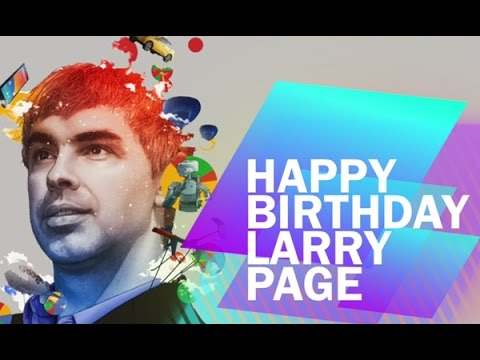
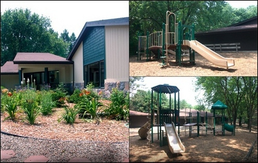
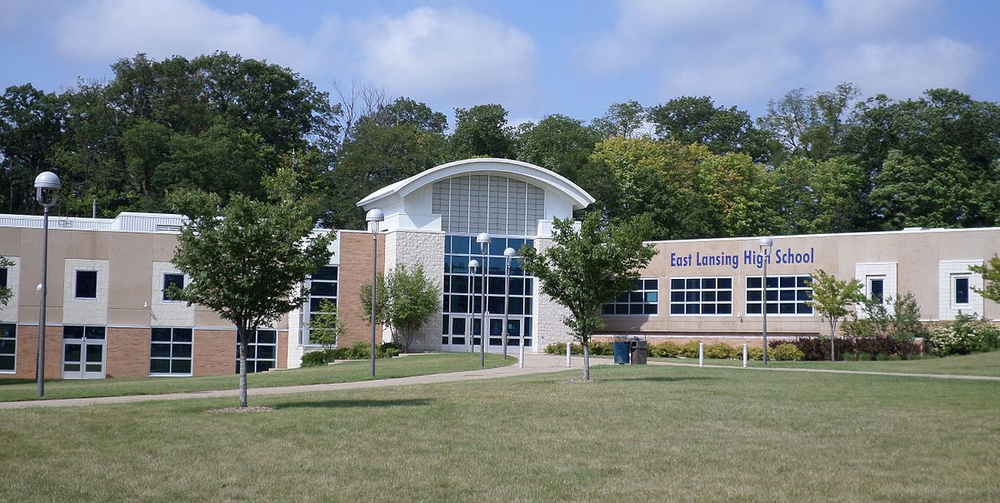
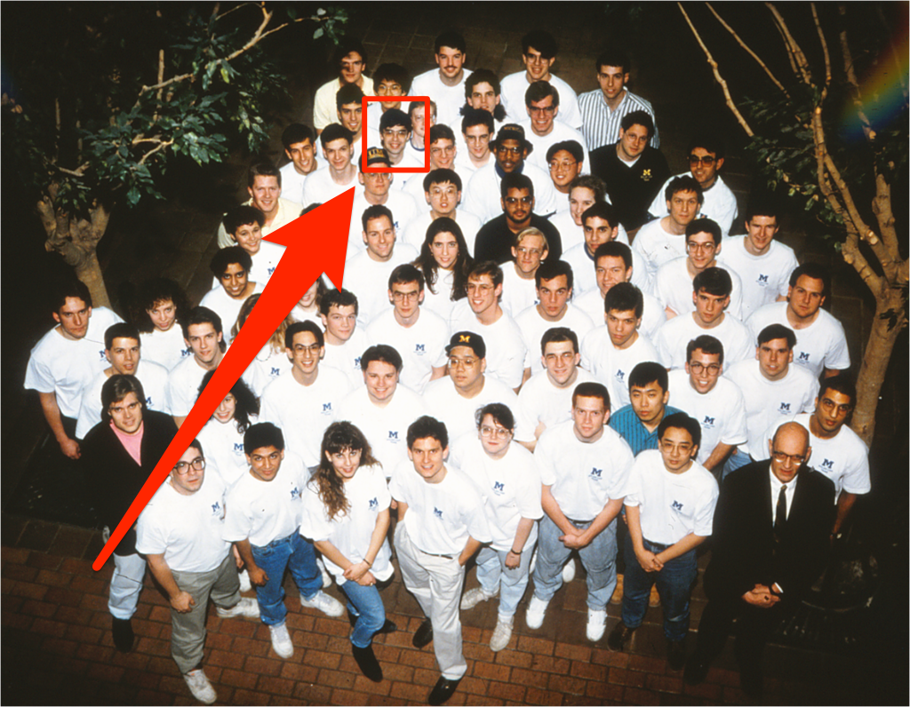
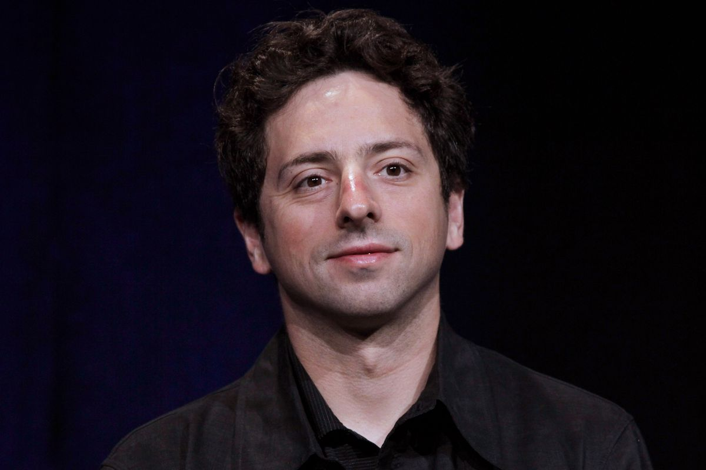
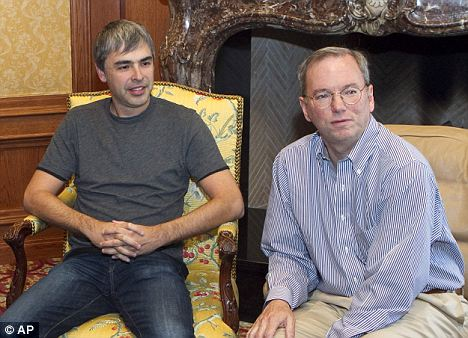

| Name | Lawrence (Larry) Page |
| Date of birth | March 26, 1973 |
| Location of Birth | Lansing, Michigan, U.S. |
| Status | Alive (44 years old) |
| Parents | Carl and Gloria Page |
| Spouse | Lucinda Southworth |
| Current Title | CEO of Google and Alphabet Inc. |
| Net Worth | $45 Billion |

Larry Page is a successful American entrepreneur and dedicated computer scientist.
March 26, 1973 |
Birth Born as Lawrence Page to Carl and Gloria Page. |
1975 – 1979 |
Montessori Radmoor Larry attended the Montessori Radmoor primary school, formerly called Okemos Montessori School, in Okemos, Michigan. |
1987 – 1991 |
East Lansing High School Larry graduated from East Lansing High School in 1991. |
1993 |
University of Michigan Larry joined the school's solar-car team. |
1995 |
Sergey Brin Larry met Sergey Brin at Stanford and together they created their search engine called 'Backrub' that operated at Stanford for months. |
September 1998 |
Google officially launched as a company and Eric Schmidt was made CEO. Page and Brin were presidents of products and technology. |
January 2011 |
Chief executive officer (Page (left) and Schmidt (right)) |
Contributions
- Larry Page co-founded the world's leading search engine for millions of users. The development of Google allowed for the interconnectiveness of the web by efficiently sifting through enormous piles of information for searches. The high depth of abstraction made searches based on popularity for everyday users possible. The wide range of applications that grew from Google such as Google Maps, Google Drive, and Gmail integrated many features outide of the original goal for Google Inc. and brought forth a new era of computing.
- Larry Page, with Sergery Brin and Eric Schmidt, created the parent company Alphabet to oversee Google and to find technological solutions to solve world problems. The reorganisation of Google into serveral companies united under Alphabet Inc. will still leave Google as one large company. This allows for other subsidiaries such as Google X to have more autonomy when it comes to its research in experimental technology.
Awards and Recognition
- Top 100 Web Sites and Search Engines (1998)
- Technical Excellence Award for Innovation in Web Application Development (1999)
- Webby Award (2000)
- Outstanding Search Service, Best Image Search Engine, Best Design, Most Webmaster Friendly Search Engine and Best Search Feature (2001)
- Top 100 Innovators in the world under the age of 35 by MIT Technology Review TR100 (2002)
- MBA from IE Business School (2003)
- Marconi Foundation Prize (2004)
- Fellows of the American Academy of Arts and Sciences (2005)
- 24th on the Forbes list of billionaires and as the 11th richest person in the United States (2011)
Works Cited
“Birthday Video Greetings to Larry Page from inviter.com.” Youtube, Youtube, 26 Mar 2015, www.youtube.com/watch?v=WXkD7bQJu8g. Accessed 24 May 2017.
@Daily Mail Reporter. “Google goes on the attack: Larry Page to take over as CEO from Eric Schmidt in shock move as company faces Facebook threat.” Daily Mail, Associated Newspapers Ltd, 24 January 2011, www.dailymail.co.uk/sciencetech/article-1349154/Google-CEO-Eric-Schmidt-steps-company-faces-Facebook-threat.html. Accessed 23 May 2017.
“East Lansing High School.” East Lansing High School, Foxbright, elps.k12.mi.us/our-schools/east-lansing-high-school/. Accessed 23 May 2017.
“Google Chrome Icon 2.” IconGod, Chromespot.com, www.icongod.com/icons/gold-chrome-icon-icons.html. Accessed 22 May 2017.
“Icons.” Andreasviklund.com, Svenska Domäner AB, andreasviklund.com/. Accessed 23 May 2017.
Jones, Ben. “Profile Page.” CodePen, CodePen, 2014, codepen.io/BCJonesey/full/RNVJpX/. Accessed 22 May 2017.
“Larry Page - Awards and Recognition.” Liquisearch, Liquisearch, www.liquisearch.com/larry_page/awards_and_recognition. Accessed 29 May 2017.
“Larry Page Biography.” The Famous People, Famous People, www.thefamouspeople.com/profiles/larry-page-3344.php. Accessed 22 May 2017.
“Larry Page.” Encyclopædia Britannica, Encyclopædia Britannica, Inc., www.britannica.com/biography/Larry-Page. Accessed 22 May 2017.
“Montessori Radmoor School.” Noodle, Noodle, www.noodle.com/schools/ktkBa/montessori-radmoor-school#overview. Accessed 23 May 2017.
Page, Larry. “Larry Page.” Google+, Google,plus.google.com/+LarryPage. Accessed 23 May 2017.
Shontell, Alyson. “Here's What Google Looked Like The First Day It Launched In 1998.” Tech Insider, Business Insider, 27 Sept 2013, www.businessinsider.com/heres-what-google-looked-like-the-first-day-it-launched-in-1998-2013-9. Accessed 24 May 2017.
Sullivan, Justin. “Google co-founder Sergey Brin joins protest against immigration order at San Francisco airport.” The Verge, Vox Media Inc., 28 Jan 2017, www.theverge.com/2017/1/28/14428262/google-sergey-brin. Accessed 23 May 2017.
“Undergrad at University of Michigan.” Tech Insider, Business Insider, www.businessinsider.com/the-life-career-of-larry-page-2016-3?op=0#/#during-his-time-as-an-undergrad-at-university-of-michigan-page-started-mulling-the-future-of-transportation-something-hes-still-interested-in-today-he-joined-the-schools-solar-car-team-pictured-below-and-suggested-that-michigan-build-a-monorail-like-personal-rapid-transit-system-between-its-campuses-5. Accessed 22 May 2017.